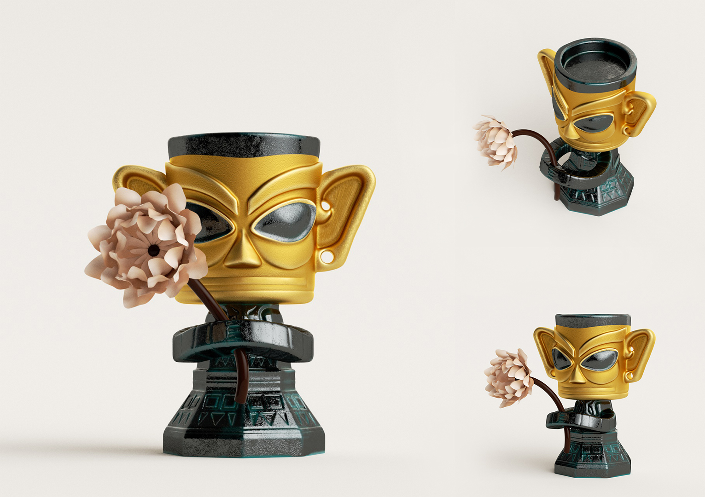

WORK EXPERIENCE
Urban Management of Shenzhen Futian Municipality
Data Analyst
Shenzhen, China
04/2023 – 07/2023
-Responsible for evaluating and analyzing the environmental sanitation index of Futian District,
identifying issues through data analysis and on-site inspections
-Assisted in collecting, cleaning, and analyzing large data
-Developed data visualizations and reports to communicate findings and key problems to the main person
in charge of each street
-Conducted statistical analysis to identify trends, patterns, and correlations in the data
Shenzhen Fengyan Technology Co., Ltd.
U3D Development Engineer
Shenzhen, China
06/2022 – 09/2022
-Cooperated with planning and designing department for function development, realized the product
design with the combination of interface dynamic effect and the form of interaction
-Took the responsibility for the development of the client interaction function and the necessary
tools for the game, marked the desired effect on the functional effects needed to be realized
Shenzhen SillSo Co.,Ltd
Interaction Designer
Shenzhen, China
12/2021 – 03/2022
-Designed UI dynamic interface with interactive design tools to the intuitive interaction effect
-Conducted user research and other surveys to investigate the operating habits and preferences habits
of various user groups, issued research reports of existing users for further conference
-Cooperated with interface designers to update the design of the WeChat Mini Program interactive
interface, implemented the specific implementation plans to improve user experience
ACADEMIC EXPERIENCE
Research and analysis on the employment situation of fresh graduates in Hong Kong 10/2023 ---- 12/2023
-Conducted an in-depth analytical study on the job market for fresh graduates in Hong Kong using Python, utilizing data from diverse sources such as Kaggle and the Hong Kong Statistics Bureau
-Ensured data integrity through comprehensive data handling, including collection, integration, and cleansing, followed by detailed analysis using advanced Python libraries, such as Pandas, to understand employment trends
-Employed data visualization tools, notably the Matplotlib library, to illustrate trends in labor force, wage dynamics, and job vacancies, providing valuable insights to assist future career decisions for graduates
Analysis report on the characteristics of machine learning in tourism industry 10/2023 ---- 12/2023
-Executed comprehensive analysis on supervised and unsupervised machine learning applications through practical investigation of real-world websites and applications
-Concentrated on implementing key algorithmic steps, identifying strengths and weaknesses, and offering suggestions for improvement, with the ultimate objective of optimizing performance and outcomes
-Authored extensive reports that delve into the characteristics of machine learning, augmented with recommendations on how these technologies can be leveraged to enhance the travel experience and business efficiency
Internet + "Rhyme of 100 Flowers, Honey" -- Rural Revitalization Project 01/2022 ---- 06/2022
-Conducted field research, and communicated with local village officials about local honey production and products promotion issues
-Collected related information and data to draft planning projects and marketing activities, such as live streaming of goods or cultural innovation
-Got involved in the packaging design of honey products for various festivals, such as the Mid-Autumn Festival and the Chinese Valentine's Day with Photoshop
Research on the Improvement of Line Segment Clipping Algorithm 11/2021 ---- 03/2022
-Focused on the improvement of Cohen-Sutherland straight-line segment clipping algorithm in third step with obvious redundant calculation process and reduction of the algorithm efficiency
-Analyzed the algorithm efficiency through deep learning methods such as the experimental method, and realized an improvement for the third case to improve the efficiency of the improved algorithm
LEADERSHIP EXPERIENCE
Public Relations Officiant Department of Student Union
President
-Took the responsibility for the hosting and promotion duties for school-level activities, coordinated with various departments for the whole preparation process of various ceremonies
-Assisted in the planning, preparation and execution of large-scale events; optimized the standardized process for hosting activity execution, reasonably arranged activities and guaranteed materials needed
-Drafted recruitment documents, and recruited team members to ensure personnel arrangements of the department
Chenxi Project -- Summer Volunteering Activities
Volunteer
-Planned the course contents based on the teaching syllabus, and students' cognitive conditions; collected feedback from children and their parents, updated teaching methods based on their suggestions
-Participated in various interaction activities with local students and helped them to establish good learning habits
WORK DISPLAY
